Лабораторная работа №1. Работа с сокетами
Студентка: Мкртчян Карина, группа K3341
Язык: Python 3.14, библиотеки: socket, threading, urllib.parse, html
Цель работы
Написать клиентскую и серверную части приложений, которые обмениваются данными по протоколам UDP, TCP и HTTP с помощью библиотеки socket.
Используемые протоколы
Сокет
Сокет — объект, через который процесс отправляет и получает данные по сети. Сокет создаётся на пару чисел: IP-адрес и порт. Порт — число от 0 до 65535, на одном порту может работать только один процесс-сервер.
AF_INET — работа с IPv4-адресами, SOCK_DGRAM — датаграммный сокет (UDP),
SOCK_STREAM — потоковый сокет (TCP).
Адрес передаётся в виде кортежа ('127.0.0.1', 8888). Все приложения в этой работе
запускаются на одном компьютере, поэтому используется адрес 127.0.0.1 — он указывает
на сам компьютер.
UDP
UDP — протокол без установления соединения. До обмена данными сервер и клиент не договариваются о соединении: сервер не знает адрес клиента заранее, клиент не сообщает серверу о своём подключении. Каждый вызов отправки — это отдельный пакет (датаграмма).
Свойства UDP:
- доставка пакета не гарантируется;
- порядок пакетов не гарантируется;
- один пакет не может превышать ограниченный размер;
- соединение не нужно: сервер не пишет
listenиaccept, клиент не пишетaccept.
Работа сервера: bind — занять порт, дальше бесконечный цикл recvfrom (получить пакет
и адрес отправителя) и sendto (отправить ответ по этому же адресу).
Работа клиента: sendto — отправить, recvfrom — получить ответ.
В клиенте задания 1 дополнительно вызывается connect. Для UDP это не установление
соединения: сетевого обмена при этом не происходит, программа просто запоминает адрес
сервера, и после этого в sendto его можно не указывать.
TCP
TCP — протокол с установлением соединения. До обмена данными стороны отправляют друг другу
три сегмента: SYN, SYN + ACK, ACK. После этого соединение считается установленным,
и по нему можно передавать данные.
Свойства TCP:
- соединение устанавливается до обмена данными и закрывается после;
- данные передаются потоком байтов без границ сообщений: один вызов
recv(1024)может вернуть часть сообщения или сразу несколько сообщений; - порядок переданных данных сохраняется, потеря и повреждение данных обнаруживаются и исправляются на уровне TCP.
Работа сервера: bind — занять порт, listen — перейти в режим ожидания, accept — блокирует
программу до появления клиента и возвращает новый сокет для этого клиента, close — закрыть
соединение.
Работа клиента: connect — установить соединение, sendall — отправить все байты,
recv — получить данные, close — разорвать соединение.
Используется sendall, а не send, потому что send отправляет только столько байт,
сколько поместилось в буфер сокета, а sendall повторяет отправку до конца.
Если соединение закрыто, recv возвращает пустой набор байтов (b'') — это признак того,
что клиент отключился.
HTTP
HTTP — текстовый протокол поверх TCP. Один HTTP- запрос занимает одно TCP-соединение, по умолчанию используется порт 80, для локального запуска — 8080.
Запрос состоит из трёх частей, разделённых пустой строкой \r\n\r\n:
GET /submit HTTP/1.1 <- строка запроса: метод, путь, версия протокола
Host: 127.0.0.1:8080 <- заголовки
Content-Type: application/x-www-form-urlencoded
Content-Length: 27
<- пустая строка: конец заголовков
subject=%D0%9C%D0%B0%D1%82 <- тело запроса
Ответ устроен так же:
HTTP/1.1 200 OK <- строка состояния: версия, код, текст
Content-Type: text/html; charset=utf-8
Content-Length: 880
Connection: close
<- пустая строка: конец заголовков
<!DOCTYPE html>... <- тело ответа
Задание 1. UDP: клиент и сервер
Что делает. Клиент отправляет серверу сообщение Hello, server!, сервер отвечает
Hello, client!. Обмен повторяется 5 раз.
Как устроено. Сервер занимает порт 8888 и в цикле вызывает recvfrom, из результата
берёт адрес отправителя и отправляет ему ответ через sendto. Сервер не хранит подключённых
клиентов: адрес он получает из каждого пакета.
Скриншот 1. Терминал с запущенным сервером задания 1: видно строку о запуске и пять принятых сообщений.
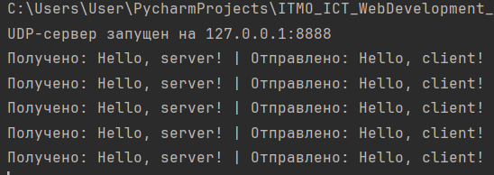
Скриншот 2. Терминал с запущенным клиентом задания 1: пять строк «Отправлено / Получено».
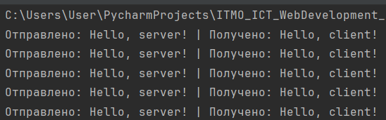
Задание 2. TCP: клиент и сервер
Что делает. Клиент вводит с клавиатуры параметры операции, сервер считает и отвечает. Обрабатываются два случая:
- два числа
a h— площадь прямоугольника,a * h; - три числа
a b угол— площадь параллелограмма со сторонамиaиbи углом между ними,a * b * sin(угла). Угол вводится в градусах, поэтому перед вычислением он переводится в радианы функциейradians.
Если число не три, приходит ответ с требованием ввести два или три числа. Если строка не числовая — с требованием ввести числа.
Как устроено. Сервер слушает порт 8888, принимает одно подключение через accept и
работает с ним в цикле, пока клиент не введёт exit. Строка от клиента разбивается на
части по пробелу, результат отправляется обратно через sendall.
Скриншот 3. Терминал с клиентом задания 2: ввод параметров и ответы сервера, в том числе ответы на ошибочный ввод.
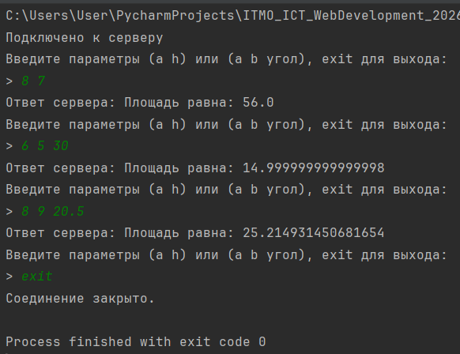
Скриншот 4. Терминал с сервером задания 2: строка о подключении клиента.
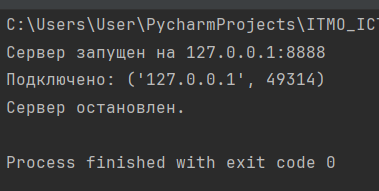
Задание 3. HTTP-сервер, отдающий страницу из файла
Что делает. Сервер читает файл index.html из своей папки и отдаёт его клиенту как
HTML-страницу: клиентом может быть браузер или командная строка.
Как устроено. Файл читается один раз при запуске сервера. Заголовки ответа собираются
в строку, к ним добавляется содержимое файла — так получается готовый ответ. Один и тот же
готовый ответ отправляется каждому подключившемуся клиенту. Перед отправкой сервер читает
запрос клиента (recv), чтобы освободить входной буфер сокета.
Путь к файлу строится от папки самого скрипта через os.path.dirname(os.path.abspath(__file__)),
поэтому сервер запускается из любой директории, а не только из своей папки.
Скриншот 5. Браузер с адресом http://127.0.0.1:8080/, на вкладке отображается
страница из index.html.
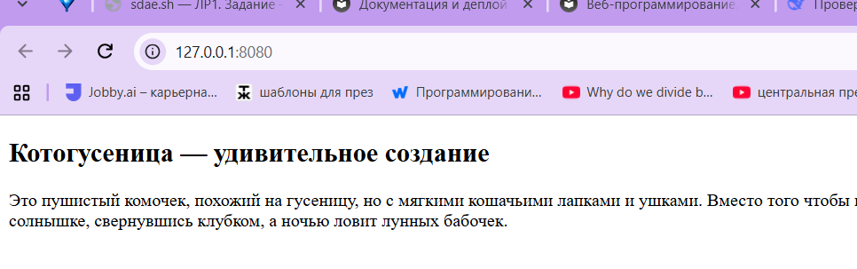
Скриншот 6. Терминал.
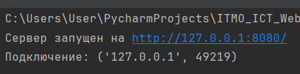
Задание 4. Многопользовательский чат
Что делает. Несколько клиентов подключаются к одному серверу, вводят имя и обмениваются
сообщениями: всё, что пишет один клиент, видят остальные. Команда /quit завершает работу
клиента.
Как устроено. Сервер хранит словарь clients, где ключ — сокет подключения, значение —
имя. Словарь общий для всех потоков, поэтому каждый доступ к нему берётся под блокировкой
threading.Lock.
На каждое подключение создаётся отдельный поток с функцией handle_client: она запрашивает
имя, добавляет клиента в словарь, сообщает остальным о его входе, затем в цикле читает
сообщения и рассылает их через broadcast всем, кроме отправителя. Потоки созданы как
демоны (daemon=True), поэтому они не мешают завершиться программе.
Когда соединение закрыто, recv возвращает b'', и поток выходит из цикла, удаляет
клиента из словаря и сообщает остальным о его уходе. Эта же последовательность выполняется
при получении /quit и при обрыве связи.
Клиент тоже многопоточный: в отдельном потоке работает receive_loop, который печатает
сообщения сервера, а в главном потоке идёт ввод с клавиатуры. Так входящие сообщения
не занимают строку ввода.
Пример работы в терминале
Сервер запускается в первом окне, клиенты — в двух других.
Скриншот 7. Терминал сервера задания 4: подключение двух клиентов, вход в чат, переписка и отключение.
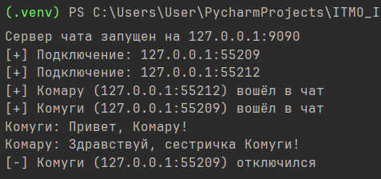
`Скриншот 8. Терминал клиента «Комуги»: приветствие сервера, счётчик участников,
сообщение от второго клиента, выход по /quit.
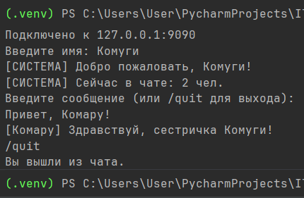
Скриншот 9. Терминал клиента «Комару»
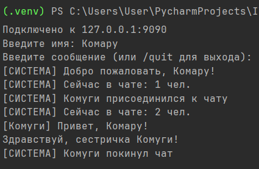
Задание 5. Веб-сервер: журнал оценок
Что делает. Сервер обрабатывает два запроса:
GET /— вернуть HTML-страницу со всеми оценками, сгруппированными по дисциплине, и формой для добавления новой оценки;POST /submit— принять дисциплину и оценку из формы, сохранить их и перенаправить браузер наGET /.
Оценки хранятся в словаре journal, где ключ — дисциплина, значение — список оценок.
Это обычный словарь в памяти программы, база данных не используется. Счётчик участников
не нужен, сервер однопоточный.
Как устроено. Запрос читается вручную, без библиотек HTTP:
read_requestнакапливает байты в буфере, пока не встретит\r\n\r\n— конец заголовков. Так как TCP не соблюдает границы сообщений, заголовки могут прийти несколькими частями.- Первая строка разбивается на метод, путь и версию протокола. Остальные строки разбираются в словарь заголовков, ключи приводятся к нижнему регистру.
- Для
POSTтело дочитывается до конца по заголовкуContent-Length. routeвыбирает ответ по методу и пути.build_responseсобирает ответ: строка состояния, заголовки, пустая строка, тело.
Проверка входных данных: дисциплина не должна быть пустой, оценка должна быть целым числом
от 1 до 5. При нарушении возвращается 400 Bad Request и данные в журнал не попадают.
Любой другой путь возвращает 404 Not Found.
Дисциплина приходит от пользователя и подставляется в HTML, поэтому перед вставкой она
обрабатывается функцией html.escape, которая заменяет спецсимволы на их коды. Без этого
введённый в поле текст вроде <b>жирный</b> сломал бы разметку страницы.
У соединения стоит таймаут 10 секунд: однопоточный сервер не должен зависать, если клиент подключился и не отправил запрос.
Скриншот 10. Браузер с адресом http://127.0.0.1:8080/: пустой журнал и форма
«Добавить оценку» с полем дисциплины и выбором оценки.
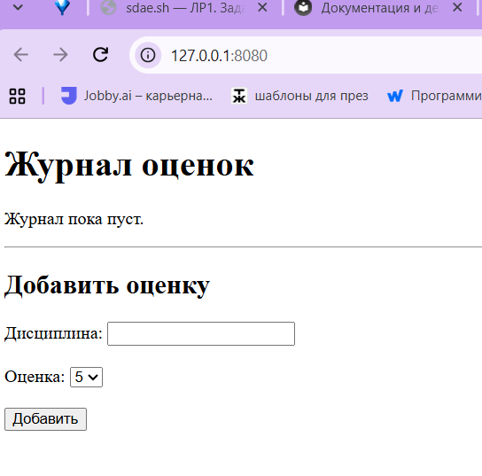
Скриншот 11. Та же страница в браузере после добавления оценок: таблица со строками по дисциплинам, количеством оценок и средним баллом.
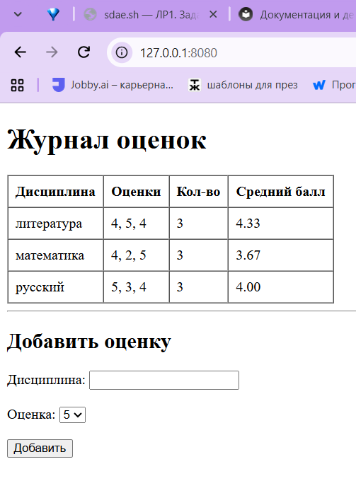
Скриншот 12. Вывод в терминале.
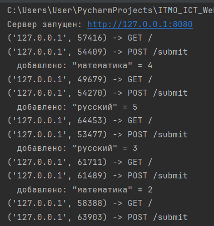